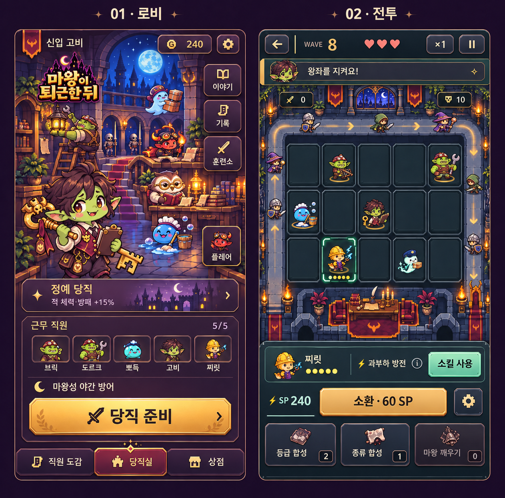
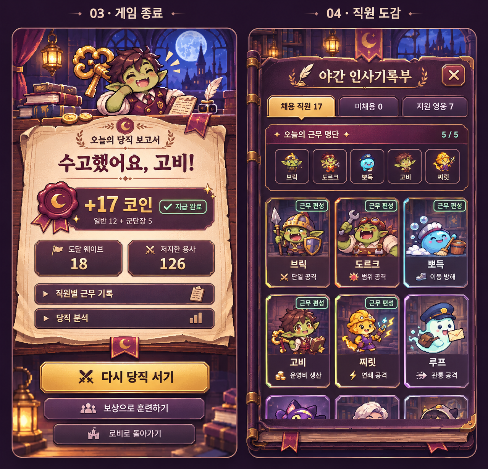
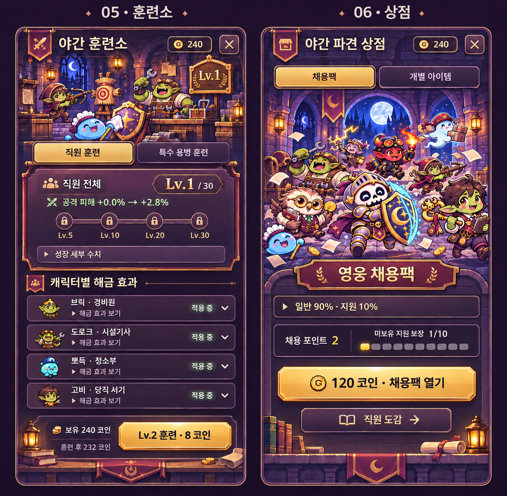

북적이는 성의 공간감, 캐릭터 중심 구성, 명확한 전투 진입과 조작 우선순위.
실제 게임 기능을 기준으로 만든 이미지 시안입니다. 아직 구현·배포한 화면이 아니며 예시 수치가 포함돼 있습니다.
직원들이 생활하는 성 내부와 명확한 당직 시작 동선 / 5×3 보드와 스킬·소환·아이템 순서

봉급 보고서로 실제 보상을 강조 / 인사기록부의 초상 카드와 5명 편성

직원 전체 성장과 해금 단계 / 대소동 채용 무대와 실제 확률·보장·구매
